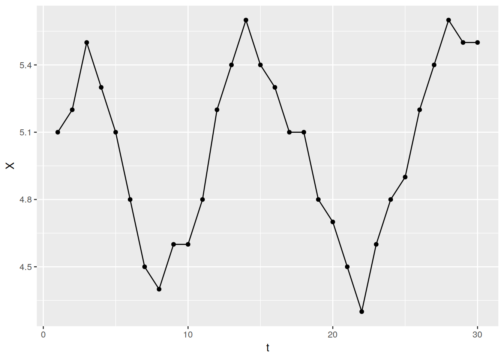
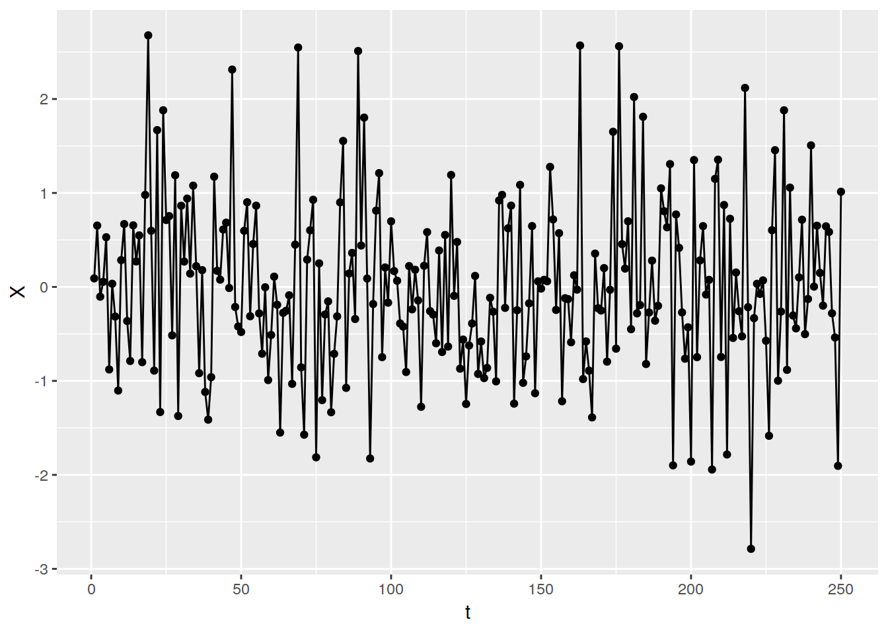

Unit 3 Autocorrelation
library(ggplot2)
acfdf <- function(vec){
vacf <- acf(vec, plot = F)
with(vacf, data.frame(lag,acf))
}
ggacf <- function(vec){
ac <- acfdf(vec)
ggplot(data = ac, aes(x = lag, y = acf))+
geom_hline(aes(yintercept = 0)) +
geom_segment(mapping = aes(xend = lag, yend = 0))
}
tplot <- function(vec){
df <- data.frame("X" = vec, "t" = seq_along(vec))
ggplot(data = df, aes(x = t, y = X)) +
geom_point() +
geom_line()
}3.1 Independence
Two events are independent in a time series if the probability that an event at time t occurs in no way depends on the ocurrence of any event in the past or affects any event in the future. Mathematically, this is written as:
\[\mathrm{Independence: }P \left(x_{t+1}|X_t\right) = P\left(X_{t+1}\right)\]
3.2 Serial Dependence / Autocorrelation
3.2.1 A definition
If two events are independent, their corellation is 0 That is if \(X_t\) and \(X_{t+k}\) are independent, \(\rho_{x_{t},x_{t+k}}=0\)
Corollary: If the correlation between two variables is not zero, then they are not independent
In other words if \(\rho_{x_{t},x_{t+k}} \neq 0\), they are not independent.
3.2.2 Autocorrelation Plots
3.2.2.1 Dependent(ish) data
In time series we look at the autocorrelation between \(X_t\) and \(X_{t+1}\) etc (with t and t+1 it is lag 1 autocorrelation)
For example, visually, let us define a vector, \(Y5\) and take its autocorrelation:
Y5 <- c(5.1,5.2,5.5,5.3,5.1,4.8,4.5,4.4,4.6,4.6,4.8,5.2,5.4,5.6,5.4,5.3,5.1,5.1,4.8,4.7,4.5,4.3,4.6,4.8,4.9,5.2,5.4,5.6,5.5,5.5)
knitr::kable(acfdf(Y5))| lag | acf |
|---|---|
| 0 | 1.0000000 |
| 1 | 0.8268482 |
| 2 | 0.5166514 |
| 3 | 0.1125421 |
| 4 | -0.2687774 |
| 5 | -0.5538901 |
| 6 | -0.6935454 |
| 7 | -0.6979912 |
| 8 | -0.5505557 |
| 9 | -0.2752524 |
| 10 | -0.0056082 |
| 11 | 0.2274804 |
| 12 | 0.3902111 |
| 13 | 0.4573468 |
| 14 | 0.4660549 |
tplot(Y5)
ggacf(Y5)
3.2.2.2 Independent(ish) data!
Now let us look at autocorrelation of independent data
Realization1 = gen.arma.wge(n = 250)tplot(Realization1)
ggacf(Realization1)
Now lets look at the actual value of the autocorrelation
knitr::kable(acfdf(Realization1))